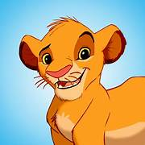

Lion King: Characters
Simba
Jonathan Taylor Thomas and Matthew Broderick
Simba is the main protagonist of The Lion King. He is the son of Mufasa and Sarabi, and the rightful heir to the throne of the Pride Lands. Simba is a brave and adventurous young lion who must learn to overcome his past and embrace his destiny as king.
Mufasa
James Earl Jones
Mufasa is the wise and noble king of the Pride Lands and the father of Simba. He is a strong and compassionate leader who cares deeply for his family and his kingdom. Mufasa's tragic death sets the stage for Simba's journey to reclaim his rightful place as king.
Nala
Niketa Calame and Moira Kelly

Nala is Simba's childhood friend and later his queen. She is a strong and independent lioness who is not afraid to speak her mind. Nala plays a key role in helping Simba confront his past and embrace his destiny.
Scar
Jeremy Irons

Simba’s sinister uncle, Scar is the main antagonist of The Lion King. He is Mufasa's jealous younger brother who plots to take over the throne of the Pride Lands. Scar is cunning and manipulative, using his wit and charm to deceive those around him.
Timon and Pumbaa
Nathan Lane and Ernie Sabella
Timon and Pumbaa are a meerkat and warthog duo who befriend Simba after he runs away from the Pride Lands. They teach Simba the ways of their carefree philosophy of life: "Hakuna Matata." Despite their lighthearted nature, they prove to be invaluable friends and allies when the time comes to confront Scar.
Rafiki
Robert Guillaume

Rafiki is a wise and mystical mandrill who serves as a spiritual guide to Simba. He helps Simba connect with his past and find the strength to reclaim his rightful place as king. Rafiki's wisdom and insight play a crucial role in Simba's journey of self-discovery.
Zazu
Rowan Atkinson
Zazu is a loyal and diligent hornbill who serves as the majordomo to the king of the Pride Lands. He is responsible for keeping order and discipline in the Pride Lands, often taking his duties very seriously. Though sometimes exasperated by the antics of Simba and his friends, Zazu remains a steadfast and reliable ally to the royal family.